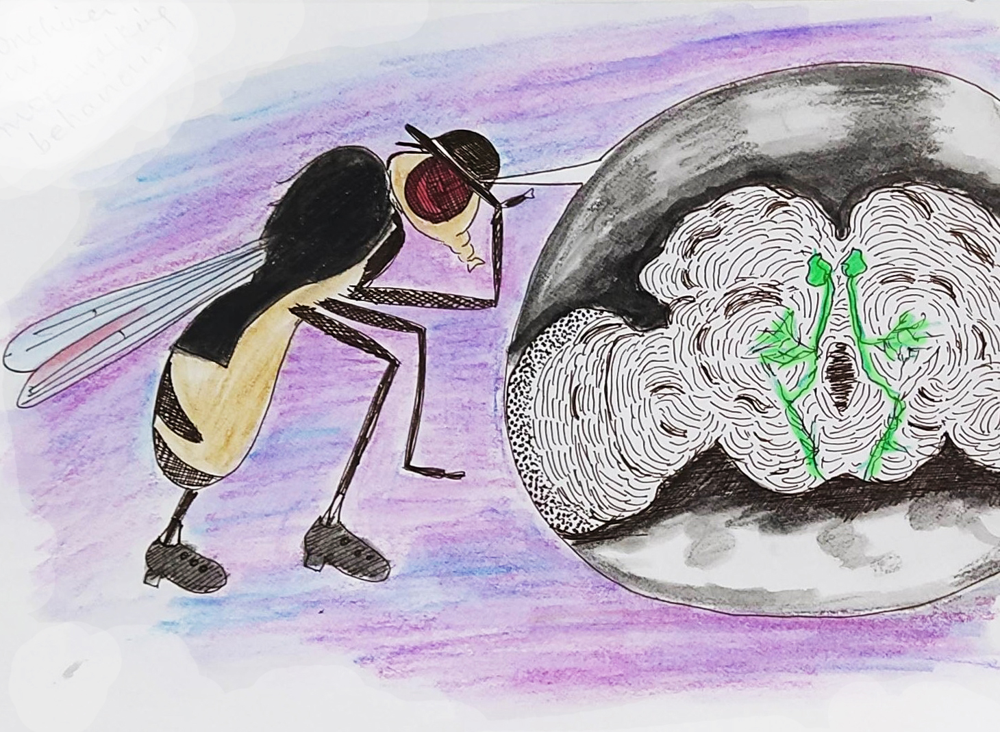

Postdoctoral Work
Neuronal basis of individual recognition and social memories in mice

Many social organisms can recognize and assign value to individuals. This can lead to the formation of social hierarchies that are stable over long time periods. Many interesting questions arise from these observations: how are identities of multiple individuals encoded in the brain? Where is all identity information stored? How is value assigned to individuals and updated with experience? Importantly, the representation of an individual must remain constant through time; at the same time, the value of that individual must be flexible enough to deal with changes in the social environment.
Mice can recognize individuals, and group-housed male mice reliably form stable linear social hierarchies where each mouse has a unique rank. My current work uses mouse as a model system to address 1) how odor information is used to generate distinct memories of identity, 2) how memories of multiple animals are preserved in the brain, and 3) how value is assigned to identity representations.